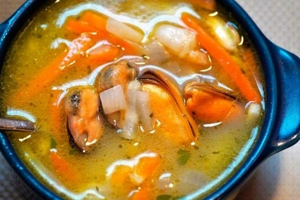

Sopa de mariscos
½ kilogramo de Cangrejos
½ kilogramo de Pulpos
½ kilogramo de Calamar
½ kilogramo de Almejas
1 Chile verde
1 Cebolla pequeña
2 Dientes de ajo
1 Rama de cilantro
1 Sobre de crema de mariscos
1 pizca de Sal
1 pizca de Pimienta
50 gramos de Mantequilla
½ taza de Crema
preparación: Para preparar el consomé, se toman 2 tazas de agua y se agrega el sobre de crema de mariscos
Se pica finamente el ajo, cilantro, la cebolla y el chile, para luego sofreírlos con mantequilla
Se incorporan al sofrito los camarones sin cascara previamente lavados, junto con los cangrejos, y se revuelve todo
En una olla, se coloca el consomé ya preparado y se añade el sofrito, agregando el pulpo, calamar y almejas
Se deja hervir y cocinar completamente
Una vez listo, se agrega 1/2 taza de crema y se deja cocinar por aproximadamente 3 minutos, hasta lograr la consistencia deseada